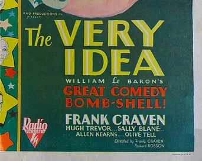

The genetics
Eugenics is the comic premise. Alan Camp, the author of a book on eugenics, sets out to prove his theories by arranging the birth of a selected child: he picks two servants as parents and pays them to conceive a baby that his childless sister will adopt. The available synopsis does not say what qualities he selected them for, nor whether anything more than an arranged conception is involved. The plan collapses for human rather than scientific reasons: the chosen couple fall in love and keep their child, the would-be adoptive parents reject a substitute, and the Goodhues finally conceive naturally. The story thus lets the eugenicist's scheme fail and rewards ordinary love and chance, though the sources do not record how critics read its attitude to eugenics. Made in 1929, when eugenics was still widely discussed in the United States, the RKO comedy was a critical and commercial failure and was banned by the Chicago Board of Censors.
How genetics is portrayed
- Overall portrayal of genetics
- negative The story ridicules the eugenicist's scheme: love overturns his selection, and natural conception, not eugenics, finally gives the Goodhues a child; the tone is comic rather than condemning.
- Outcome of the genetic intervention
- mixed The arranged conception produces a baby and a happy marriage for Joe and Nora, but the eugenic plan itself fails: the parents keep the child, the Goodhues reject a substitute and Alan is left despondent.
- Alan Camp
- villain Aim: ideological, personal (mixed). The author of a book on eugenics selects and pays the chauffeur and the maid to conceive a child for his childless sister in order to prove his theories; the comedy makes him the meddling obstacle to the couple keeping their baby, and his scheme collapses, leaving him to dismantle the nursery.
The story
Alan Camp has written a book on eugenics and wants to prove his theories. His sister Edith and her husband Gilbert Goodhue have long been unable to have children, so Alan persuades them to adopt a child created by eugenic selection. He chooses the Goodhues' chauffeur, Joe Garvin, and their maid, Nora, as the parents, and offers each of them $15,000 if they conceive and deliver a baby within a year. The Goodhues leave on a year-long trip to California. Joe and Nora do have a baby, but they fall in love, marry and refuse to give the child up. Alan sends Joe to an orphanage for a substitute baby, which the Goodhues reject, and the despondent Alan dismantles the nursery. The comedy ends when Edith announces that she is pregnant.